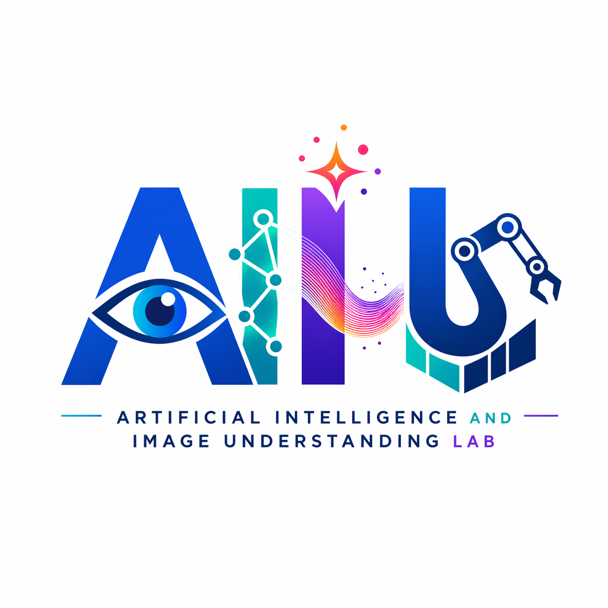

Education
→- Ph.D. in Computer ScienceUniversity of Maryland College Park, 2016
- M.S. in Computer Science and Information EngineeringNational Taiwan University, 2006
- B.S. in Computer Science and Information EngineeringNational Taiwan University, 2004
